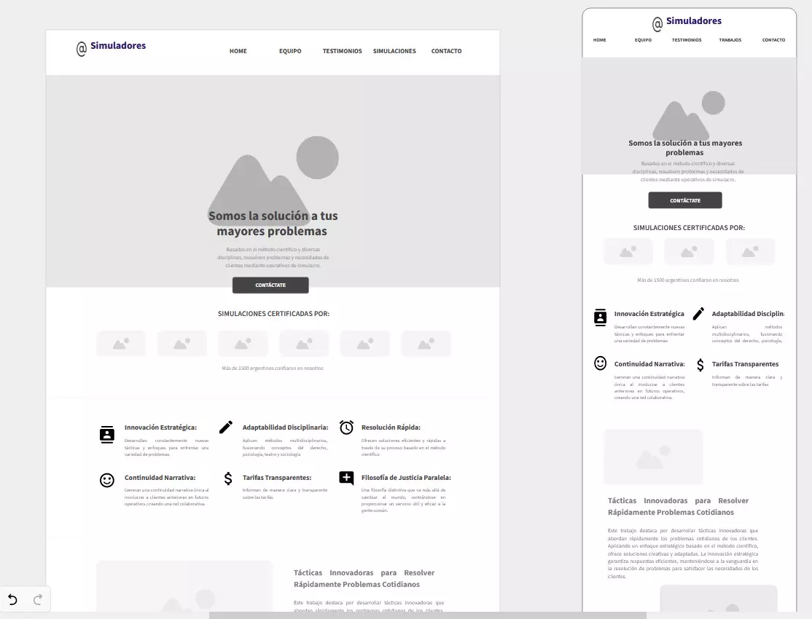

PRIMERA PRE-ENTREGA
En la etapa inicial del proyecto, la primera pre-entrega marcó el inicio de mi
travesía
en Coderhouse. La tarea era clara: construir una maquetación y esquema en HTML para dar forma a
la
esencia de Los Simuladores en nuestra realidad. Desde los primeros trazos hasta la estructura
inicial, cada línea de código era una oportunidad para plasmar las ideas emergentes. Esta fase
no
solo representó un desafío técnico, sino también el primer vistazo a la materialización de la
creatividad. La maquetación inicial se convirtió en el lienzo digital donde las futuras ideas y
desarrollos tomarían forma.
CSS BASICO
La primera pre-entrega se centró en la creación de una maquetación básica y un
esquema en
HTML para la página. Durante este proceso, me sumergí en la estructura fundamental del proyecto,
dando forma a la disposición y organización de los elementos en la interfaz. Cada línea de
código
HTML era un ladrillo que construía el cimiento de la experiencia digital de Los Simuladores. Con
el
esquema en su lugar, comencé a visualizar cómo interactuarían los usuarios con la página y cómo
se
desarrollaría la narrativa a medida que navegaran por el contenido. Esta primera entrega no solo
sentó las bases técnicas del proyecto, sino que también marcó el inicio de un viaje creativo
hacia
la creación de una experiencia única e inmersiva.
SEGUNDA PRE-ENTREGA
En la segunda pre-entrega, introduje potentes herramientas para transformar y elevar
la
calidad visual y funcional de la página. La incorporación de herramientas como FLEX, GRID,
PSEUDOCLASES, y el uso de frameworks CSS marcó un impactante cambio en la estética y la
estructura
del proyecto. Este conjunto de herramientas no solo mejoró la eficiencia en el desarrollo, sino
que
también dio paso a un diseño más atractivo y funcional, creando una experiencia de usuario
notablemente mejorada en comparación con la primera entrega. Cada herramienta desempeñó un papel
crucial en el impactante cambio que experimentó el proyecto, marcando una evolución
significativa en
su calidad y presentación.

TERCERA PRE-ENTREGA
Llevé la calidad del proyecto a un nivel superior al incorporar la potente
herramienta
Sass (Syntactically Awesome Stylesheets). La adopción de Sass no solo simplificó la gestión de
estilos, sino que también aportó numerosos beneficios a la estructura y mantenimiento del
código.La
implementación de Sass no solo optimizó el desarrollo, sino que también facilitó la
escalabilidad y
la colaboración en el proyecto. Este avance marcó una diferencia sustancial, destacando el
compromiso con las mejores prácticas y la mejora continua en la creación de un proyecto web
sólido y
moderno.